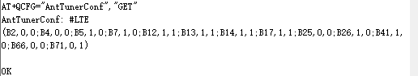

高通平台死机dump log
移远
需要打开高通的调制解调器
setprop sys.usb.config diag,serial_cdev,rmnet,adb
打开电脑的设备管理器,调制解调器,属性,如下图,端口21

使用 QCOM_V1.6.exe 输入命令 at+qcfg=”dumpenable”,1 ,, 打开死机dump功能
at+qcfg=”dumpenable” 查询是否开启dump功能
at+qcfg=”dumpenable”,0 //0表示死机后直接开机
at+qcfg=”dumpenable”,1 //1表示死机后进入dump
用at命令写入的是保存在fsc分区, 可以预置fsc分区,然后fastboot flash fsc fsc.bin
代码里面,读取的是,A6650_Unpacking_Tool/BOOT.XF.4.1/boot_images/QcomPkg/SocPkg/Library/XBLLoaderLib/sbl1_mc.c
int sbl1_check_dump_enable_nvdata1 (void) { int result=0; boot_boolean success = FALSE; boot_flash_trans_if_type *trans_if = NULL; static uint8 nvdata1_buffer[16]; boot_flash_configure_target_image(nvdata1_partition_id); trans_if = boot_flash_dev_open_image(GEN_IMG); /* Verify ddr training data size is valid */ BL_VERIFY( trans_if != NULL, BL_ERR_NULL_PTR_PASSED|BL_ERROR_GROUP_BOOT ); success = quec_boot_flash_trans_read_enable_dump(trans_if, (void *) nvdata1_buffer, 0x10, 16, IMAGE_BODY_TYPE); BL_VERIFY(success, BL_ERR_FLASH_READ_FAIL|BL_ERROR_GROUP_BOOT); /* close parition */ boot_flash_dev_close_image(&trans_if); if (strstr((const char *)nvdata1_buffer, "enabledump") != NULL) { boot_log_message("enable_dump"); return 1; } else { boot_log_message("disable_dump"); boot_hw_reset(BOOT_HARD_RESET_TYPE); return 0; } return result; }
打开 QPST Configuration Application, 插上usb,自动导出log,配合vmlinux, 捉到的log在help 可以看到目录
输入echo c > /proc/sysrq-trigger 可以测试死机
广和通
跟移远相差应该不大,但是有些具体命令,如下图
cat /sys/module/msm_poweroff/parameters/download_mode
sysrq-trigger
/proc/sysrq-trigger 文件用于在Linux系统中触发紧急操作，例如立即重启、关闭计算机，以及导出内存分配、CPU寄存器和标志位、线程状态等信息。
具体来说，通过写入以下命令到该文件，可以触发不同的操作：
echo “b” > /proc/sysrq-trigger：立即重启计算机。
echo “o” > /proc/sysrq-trigger：立即关闭计算机。
echo “m” > proc/sysrq-trigger：导出内存分配的信息，可以在 /var/log/message 文件中查看输出结果。
echo “p” > proc/sysrq-trigger：导出当前CPU寄存器信息和标志位的信息。
echo “t” > proc/sysrq-trigger：导出线程状态信息。
echo “c” > proc/sysrq-trigger：触发crash,进入dump
烧录efuse后,dump失败
机器烧录efuse后,手动触发crash,机器直接重启,不进入dump
解决方法
QCM2290.LA.2.0/common/sectools/config/agatti/agatti_debugpolicy.xml
value值 全部写1
<flags> <flag> <bit_pos>0</bit_pos> <value>1</value> </flag> <!--DP_ENABLE_ONLINE_CRASH_DUMPS--> <flag> <bit_pos>1</bit_pos> <value>1</value> </flag> <!--DP_ENABLE_OFFLINE_CRASH_DUMPS--> <flag> <bit_pos>2</bit_pos> <value>1</value> </flag> <!--DP_ENABLE_JTAG--> <flag> <bit_pos>3</bit_pos> <value>1</value> </flag> <!--DP_ENABLE_LOGS--> <flag> <bit_pos>4</bit_pos> <value>1</value> </flag> <!-- DP_ENABLE_MODEM_INV_DEBUG --> <flag> <bit_pos>5</bit_pos> <value>1</value> </flag> <!-- DP_ENABLE_MODEM_NINV_DEBUG --> <flag> <bit_pos>6</bit_pos> <value>1</value> </flag> <!-- DP_ENABLE_DEBUG_INV --> <flag> <bit_pos>7</bit_pos> <value>1</value> </flag> <!-- DP_ENABLE_DEBUG_LEVEL --> <flag> <bit_pos>8</bit_pos> <value>1</value> </flag> <!-- DP_ENABLE_DEBUG_LEVEL --> <flag> <bit_pos>24</bit_pos> <value>1</value> </flag> <!--DP_ENABLE_NONSECURE_CRASH_DUMPS--> <flag> <bit_pos>25</bit_pos> <value>1</value> </flag> <!--DP_ENABLE_APPS_ENCRYPTED_MINI_DUMPS--> <flag> <bit_pos>26</bit_pos> <value>1</value> </flag> <!--DP_ENABLE_MPSS_ENCRYPTED_MINI_DUMPS--> <flag> <bit_pos>27</bit_pos> <value>1</value> </flag> <!--DP_ENABLE_LPASS_ENCRYPTED_MINI_DUMPS--> <flag> <bit_pos>28</bit_pos> <value>1</value> </flag> <!--DP_ENABLE_CSS_ENCRYPTED_MINI_DUMPS--> <flag> <bit_pos>29</bit_pos> <value>1</value> </flag> <!--DP_ENABLE_ADSP_ENCRYPTED_MINI_DUMPS--> <flag> <bit_pos>30</bit_pos> <value>1</value> </flag> <!--DP_ENABLE_CDSP_ENCRYPTED_MINI_DUMPS--> <flag> <bit_pos>31</bit_pos> <value>1</value> </flag> <!--DP_ENABLE_WLAN_ENCRYPTED_MINI_DUMPS--> </flags>填入 要开dump的机器的serial num
xbl abl 都会打印这个serial num,xbl小写,abl大写
[2023/8/30 16:35:30] Format: Log Type - Time(microsec) - Message - Optional Info [2023/8/30 16:35:30] Log Type: B - Since Boot(Power On Reset), D - Delta, S - Statistic [2023/8/30 16:35:30] S - QC_IMAGE_VERSION_STRING=BOOT.XF.4.1-00343-KAMORTALAZ-1 [2023/8/30 16:35:30] S - IMAGE_VARIANT_STRING=AgattiPkgLAA [2023/8/30 16:35:30] S - OEM_IMAGE_VERSION_STRING=ubuntu2145 [2023/8/30 16:35:30] S - Boot Interface: eMMC [2023/8/30 16:35:30] S - Secure Boot: On [2023/8/30 16:35:30] S - Boot Config @ 0x01b46070 = 0x00000041 [2023/8/30 16:35:30] S - JTAG ID @ 0x01b46130 = 0x001850e1 [2023/8/30 16:35:30] S - OEM ID @ 0x01b46138 = 0x00000000 [2023/8/30 16:35:30] S - Serial Number @ 0x01b46134 = 0xf293201a [2023/8/30 16:35:52] Platform Init [22420] BDS [2023/8/30 16:35:52] UEFI Ver : 5.0.230829.BOOT.XF.4.1-00343-KAMORTALAZ-1 [2023/8/30 16:35:52] Platform : IDP [2023/8/30 16:35:52] Chip Name : QCM_AGATTI [2023/8/30 16:35:52] Chip Ver : 1.0 [2023/8/30 16:35:52] Chip Serial Number : 0xF293201A

<serial_num_list> <!--Range: 1 to 200--> <!--<serial_num>00000000</serial_num>--> </serial_num_list>9008读取serial number的方法,引用网上,没有经过验证
9008模式下如何读取MSMID和serial_number 1、电脑上安装QPST，默认路径为：C:\Program Files (x86)\Qualcomm\QPST\bin 2、打开Windows的命令行窗口，开始->cmd->回车 3、在命令行输入：cd C:\Program Files (x86)\Qualcomm\QPST\bin 4、操作手机进入9008模式，（adb reboot edl，或者通过短接，或者空板直接连接USB） 5、在设备管理器中确认9008对应的端口号比如56 6、在命令行输入命令QSaharaServer.exe -v 1 -u 56 -c 1 -w c:\temp\ 参数说明：-v 显示log，-u 端口号，-c 命令号，-w 输出目录 7、可以得到文件c:\temp\commandop01.bin，这里存放的就是Serial Number。用16进制打开查看，这个每个板子都不一样。 8、重复4-5的操作(一次只能执行一个命令)，输入命令QSaharaServer.exe -v 1 -u 56 -c 2 -w c:\temp\ 9、可以得到文件c:\temp\commandop02.bin，这里存放的就是MSM ID。用16进制打开查看，这个cpu相同的值是相同的。 但是这个值是小端的，要调过来，比如bin中的值看到的是25eb3650，使用的时候应该是5036eb25
A6650_Unpacking_Tool/BOOT.XF.4.1/boot_images/QcomPkg/SocPkg/AgattiPkg/Library/QusbLdrLib/qusb_ldr_utils.c
烧录了apdp.mbn后,APDP Image Loaded，xbl会有20秒的EUD log打印，需要去掉
这个去不去掉都可以,去掉就避免延迟20秒

编译apdp
apdp分区,默认是空的,没有写入
QCM2290.LA.2.0$ python common/sectools/sectools.py debugpolicy -i dbgp_ap –sign_id=dbgp_ap -p agatti -g -s
编译的文件在QCM2290.LA.2.0/common/sectools/debugpolicy_output/apdp.mbn
用fastboot或者qfil单独升级apbp分区，重启即可
sn是保存在apdp.mbn分区的0x000030D1 这一行的位置, 串口log,
Serial Number @ 0x01b46134 = 0xf293201a
经过下面修改,可以跳过serialnumber的那一步
注意
若开了熔丝后，没有开debugpolicy，测试出来RMPB Key status: RPMB_KEY_PROVISIONED_AND_OK (0)，
说明在熔丝之前有些emmc的rpmb，用的是test key，会导致熔丝后不开机，不开机的log如下
QseeLoadServiceImageSyscall Failed
Keymaster failed to load! Status = 0x1
Unable to load Keymaster using label Status:14
解决方法是换flash，或者针对熔丝后不开机的机器打开 debugpolicy 后续量产的机器要求先烧熔丝，再写rpmb key（rpmb key只能写一次）